Panel data (also called longitudinal data, repeated measures or time-series cross-section) records the same individuals over time: employees over weeks, patients over visits, firms over years, regions over quarters. The rows are long — one row per individual and time point — and the analysis usually involves two questions at once: what happened over time within each individual, and how do individuals compare once they are grouped.
panelviz turns one declaration of which column is the individual and which column is time into aggregated tables and publication-ready charts. This vignette walks through the whole workflow on a simulated dataset, so it runs without any downloads.
Declare the panel
We simulate 120 employees observed weekly for half a year, with some weeks missing so the panel is unbalanced — the common case in practice.
library(panelviz)
set.seed(42)
people <- data.frame(
person = sprintf("p%03d", 1:120),
team = sample(
c("Sales", "Operations", "Finance", "Support", "Technology"),
120, replace = TRUE, prob = c(0.30, 0.25, 0.15, 0.15, 0.15)
)
)
grid <- expand.grid(
person = people$person,
week = 0:25,
stringsAsFactors = FALSE
)
grid$week <- as.Date("2024-01-01") + grid$week * 7
d <- merge(grid, people, by = "person")
d <- d[stats::runif(nrow(d)) > 0.08, ] # drop some weeks: unbalanced
d$score <- 55 +
as.numeric(factor(d$team)) * 2 + # teams differ in level
0.2 * as.numeric(d$week - as.Date("2024-01-01")) / 7 + # slow upward trend
stats::rnorm(nrow(d), 0, 5) # individual noiseas_panel() declares the individual and the time column.
It recognises the time format, sorts the data and reports the shape of
the panel:
panel <- as_panel(d, id = person, time = week, source = "Simulated data")
panel
#> # A tidy panel: 120 individuals x 26 periods (week), 2024-01-01 to 2024-06-24
#> # id = person | time = week | unbalanced (92% of id-period cells filled) | 2,862 obs
#> # A tibble: 2,862 × 6
#> .id .time person week team score
#> * <chr> <date> <chr> <date> <chr> <dbl>
#> 1 p001 2024-01-01 p001 2024-01-01 Support 63.4
#> 2 p001 2024-01-08 p001 2024-01-08 Support 64.3
#> 3 p001 2024-01-15 p001 2024-01-15 Support 71.1
#> 4 p001 2024-01-22 p001 2024-01-22 Support 61.3
#> 5 p001 2024-01-29 p001 2024-01-29 Support 69.9
#> 6 p001 2024-02-05 p001 2024-02-05 Support 60.6
#> 7 p001 2024-02-12 p001 2024-02-12 Support 60.7
#> 8 p001 2024-02-19 p001 2024-02-19 Support 72.6
#> 9 p001 2024-02-26 p001 2024-02-26 Support 67.8
#> 10 p001 2024-03-04 p001 2024-03-04 Support 65.8
#> # ℹ 2,852 more rowsThe header tells you how many individuals and periods there are,
whether the panel is balanced, and how many rows were read. The
source given here is printed in the footer of every chart
drawn from the panel.
Time formats are detected
Dates, years, quarters ("1998 Q1"), months
("2020-03"), ISO weeks, hourly timestamps, Stata
%tm and %tq values and plain indices are all
recognised. panel_meta() reports what was detected:
panel_meta(panel)[c("id", "time", "kind", "freq", "n_ids", "n_periods", "balanced")]
#> $id
#> [1] "person"
#>
#> $time
#> [1] "week"
#>
#> $kind
#> [1] "date"
#>
#> $freq
#> [1] "week"
#>
#> $n_ids
#> [1] 120
#>
#> $n_periods
#> [1] 26
#>
#> $balanced
#> [1] FALSEAmbiguous input stops with an informative error rather than being
guessed; pass time_format (a strptime() string
such as "%d.%m.%Y", or a name such as "year")
when you know the format.
Aggregate in two stages
A panel has two dimensions, so aggregation happens in two stages.
First, time is collapsed within each individual
(fun_time), then individuals are collapsed into groups
(fun_group):
head(
panel_aggregate(panel, "score",
by = "team", period = "week",
fun_time = "mean", fun_group = "mean"),
8
)
#> # A tibble: 8 × 4
#> .period team score .n
#> <date> <chr> <dbl> <int>
#> 1 2024-01-01 Finance 56.6 19
#> 2 2024-01-08 Finance 55.3 17
#> 3 2024-01-15 Finance 57.7 18
#> 4 2024-01-22 Finance 58.3 16
#> 5 2024-01-29 Finance 58.2 18
#> 6 2024-02-05 Finance 57.8 17
#> 7 2024-02-12 Finance 58.0 17
#> 8 2024-02-19 Finance 55.1 17The .n column is the number of individuals behind each
value. Use fun_time = "sum" for flows and
"last" for stocks or cumulative counts,
fun_group = "median" or "p90" for other
summaries, and min_n to suppress groups with too few
individuals (the chart footer reports the suppression).
Charts
Every chart function takes the same arguments: by
(grouping column), period, fun_time,
fun_group, min_n, tag,
source, style and return.
Lines
One overall series, or one line per group with direct labels at the last observed value. Titles are computed from the data:
panel_line(panel, "score")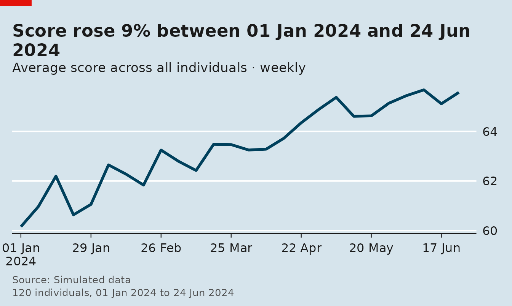
panel_line(panel, "score", by = "team")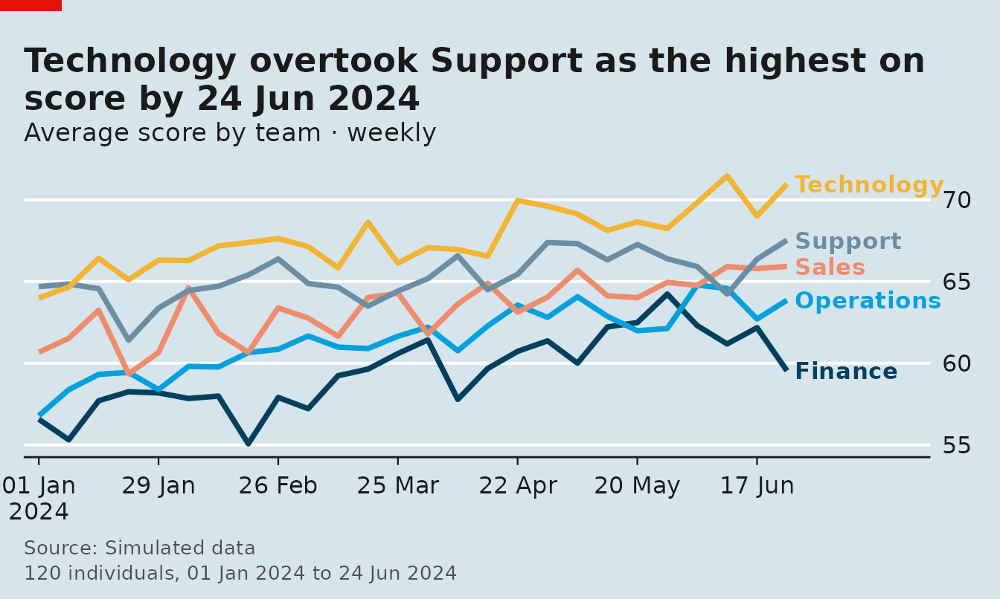
Coarsen time with period, add a privacy floor with
min_n, or highlight one group and index every group to 100
at its first period:
panel_line(panel, "score", by = "team", period = "month", min_n = 25)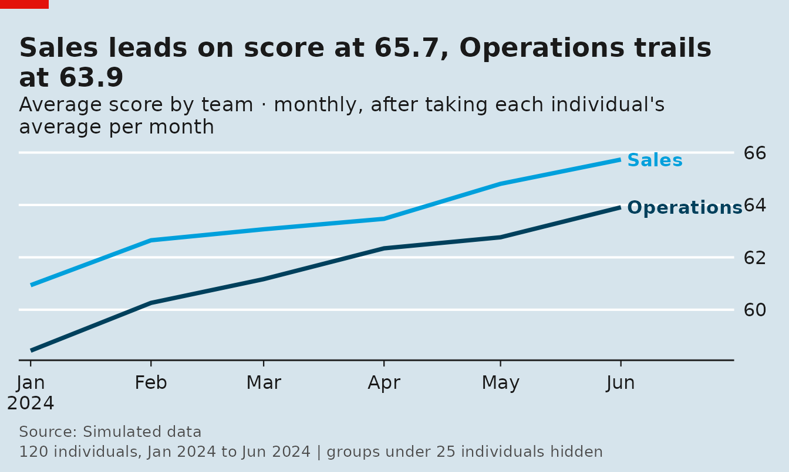
panel_line(panel, "score", by = "team", highlight = "Technology", index = TRUE)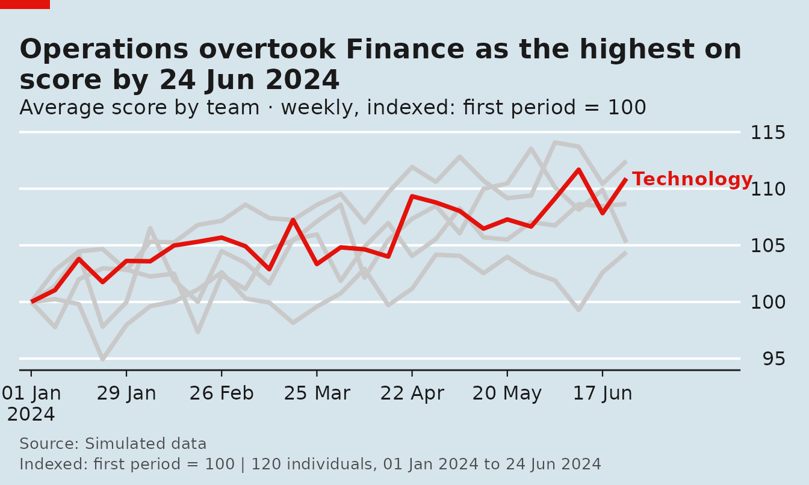
Heatmap
Groups (rows) by time (columns), sorted by level:
panel_heatmap(panel, "score", by = "team", period = "week")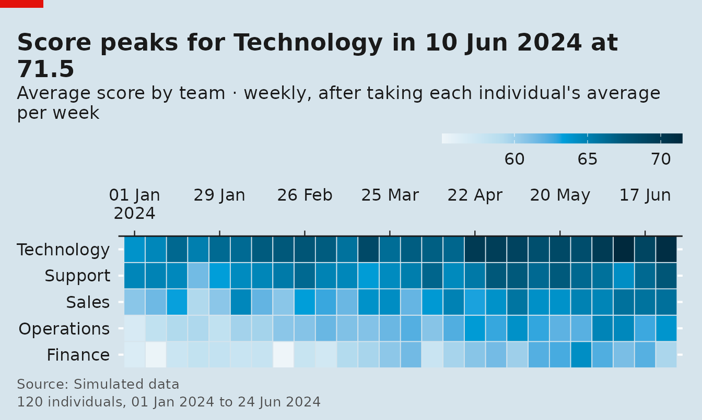
Band
The median line with a shaded percentile band shows the spread across individuals, not just the centre:
panel_band(panel, "score", by = "team", lower = "p10", upper = "p90")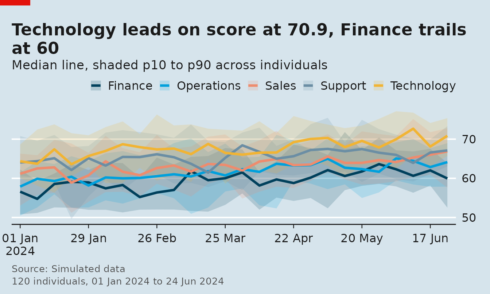
Bars
Time is collapsed (period = "all" by default) and groups
are ranked:
panel_bar(panel, "score", by = "team", fun_group = "median")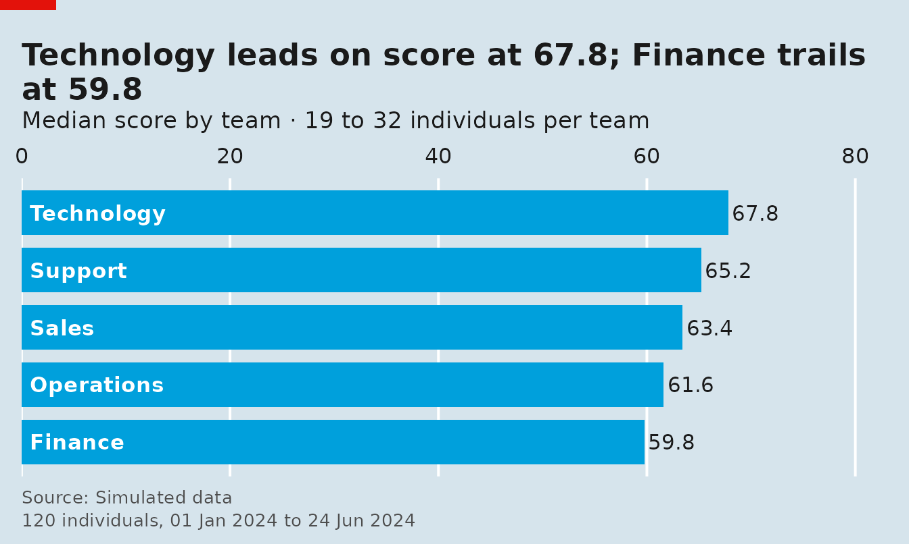
Distribution
Each individual’s average over time, then the distribution across individuals:
panel_distribution(panel, "score", by = "team")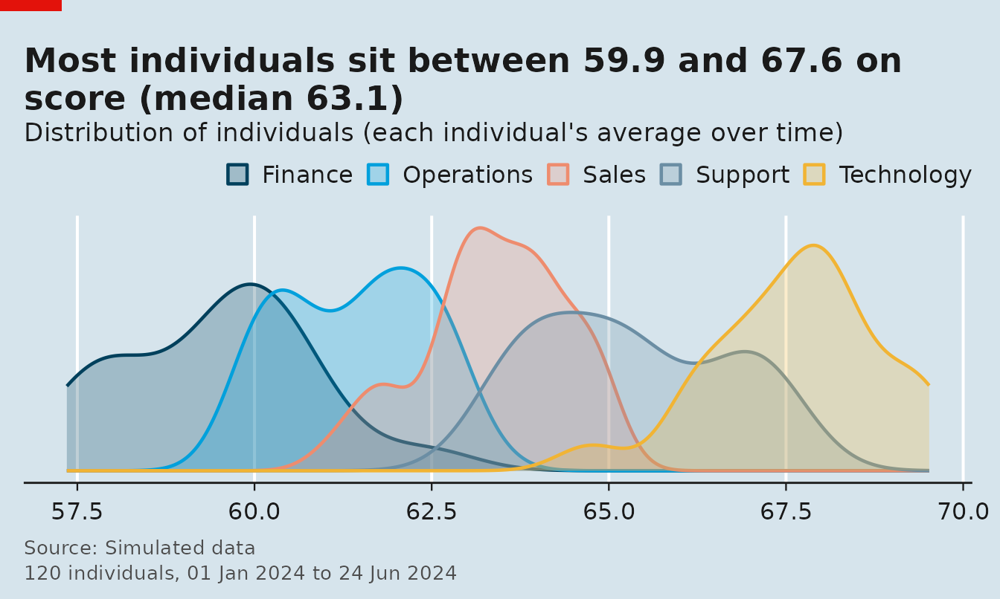
Spaghetti
Thin lines for a random sample of individuals with the group average on top:
panel_spaghetti(panel, "score", n_ids = 40, seed = 1)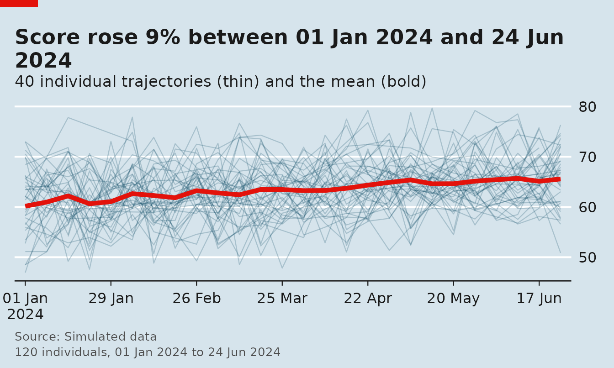
Get the numbers behind a chart
Every chart takes return = "table" and returns exactly
what it drew — a tibble with the aggregated values, the period, the
number of individuals and the group:
head(panel_line(panel, "score", by = "team", return = "table"), 8)
#> # A tibble: 8 × 5
#> .period team score .n .group
#> <date> <chr> <dbl> <int> <chr>
#> 1 2024-01-01 Finance 56.6 19 Finance
#> 2 2024-01-08 Finance 55.3 17 Finance
#> 3 2024-01-15 Finance 57.7 18 Finance
#> 4 2024-01-22 Finance 58.3 16 Finance
#> 5 2024-01-29 Finance 58.2 18 Finance
#> 6 2024-02-05 Finance 57.8 17 Finance
#> 7 2024-02-12 Finance 58.0 17 Finance
#> 8 2024-02-19 Finance 55.1 17 FinanceStyles, tags and overrides
Five looks ship with the package, and any computed text can be overridden:
panel_styles()
#> [1] "economist" "ft" "clean" "dark" "mono"
panel_line(
panel, "score", by = "team",
style = "ft", tag = 1,
title = "Scores rose across every team",
source = "Simulated data"
)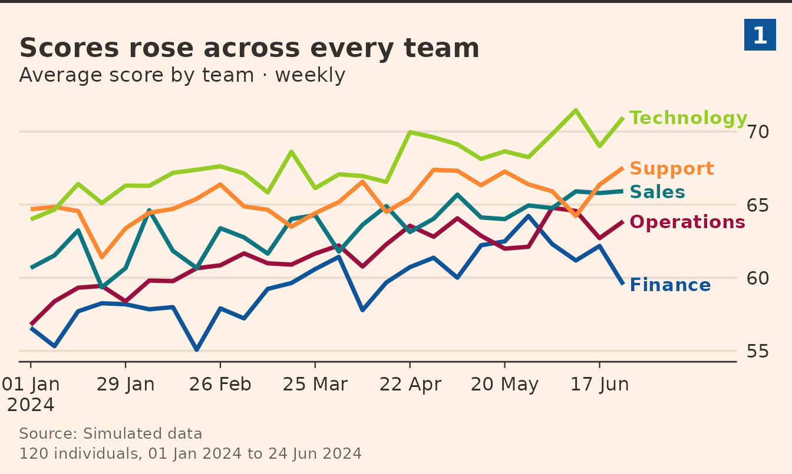
use_panel_style("dark") sets the default for the whole
session.
Numbered multi-panel figures
panel_figure() lays several charts out under one
headline, numbers the panels and shares one source and notes footer:
panel_figure(
list(
panel_line(panel, "score", by = "team"),
panel_heatmap(panel, "score", by = "team"),
panel_bar(panel, "score", by = "team", fun_group = "median"),
panel_distribution(panel, "score", by = "team")
),
title = "Four views of one panel",
subtitle = "Weekly scores by team, 120 simulated employees",
source = "Simulated data",
notes = "Individuals are simulated employees."
)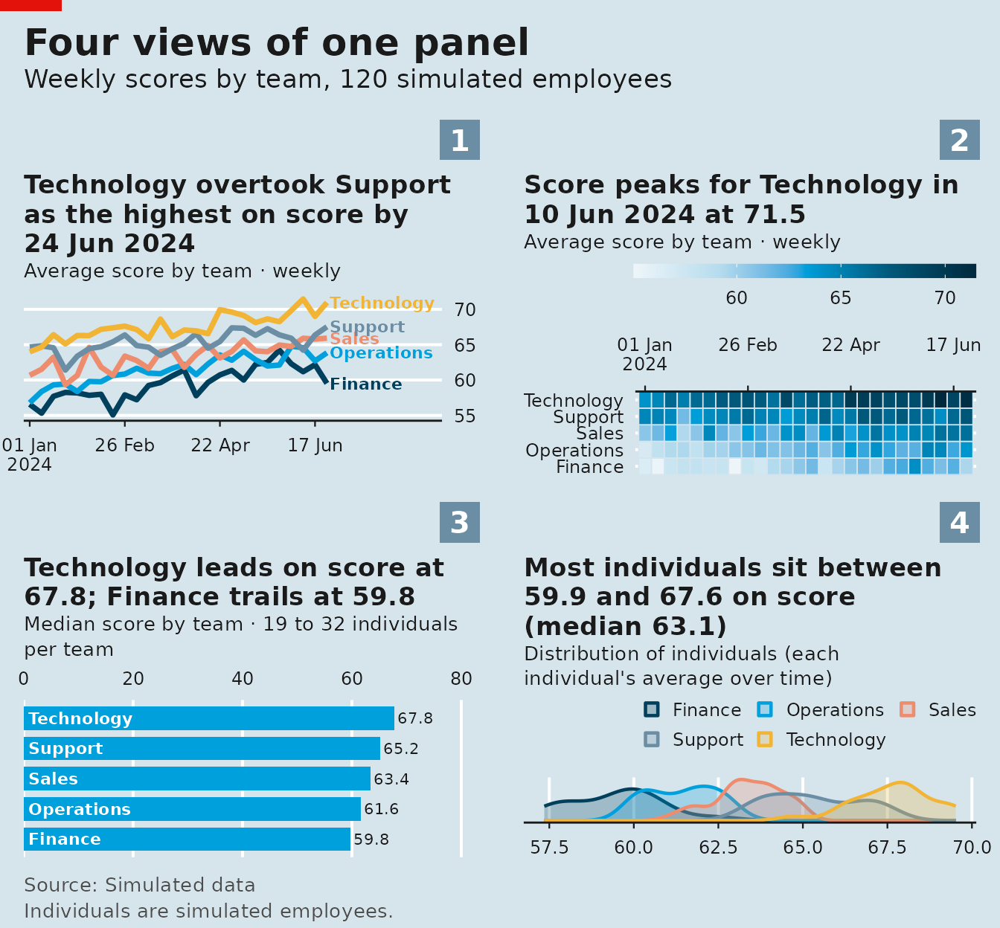
Save any chart or figure with
save_panel(fig, "figure.png", width = 12, height = 8).
Reading real data
read_panel() declares a file or URL as a panel — csv,
tsv, Stata, SPSS and rds are supported, and Stata variable labels become
chart names:
nls <- read_panel("nlswork.dta", id = idcode, time = year)
gm <- read_panel("gapminder.csv", id = country, time = year)
# composite individual: several columns
tour <- read_panel("tourism.csv", id = c(Region, State, Purpose), time = Quarter)Wide data (one column per period) is pivoted to long format first:
as_panel_wide(wide, id = company, cols = starts_with("inc"))Where next
-
?read_panel,?panel_aggregateand?panel_linedocument the arguments shared by every chart. -
panel_styles()lists the five looks;save_panel()writes PNG, PDF or PostScript at a chosen size. - The README has a longer gallery of examples, including tracking charts, stacked bars and small multiples.